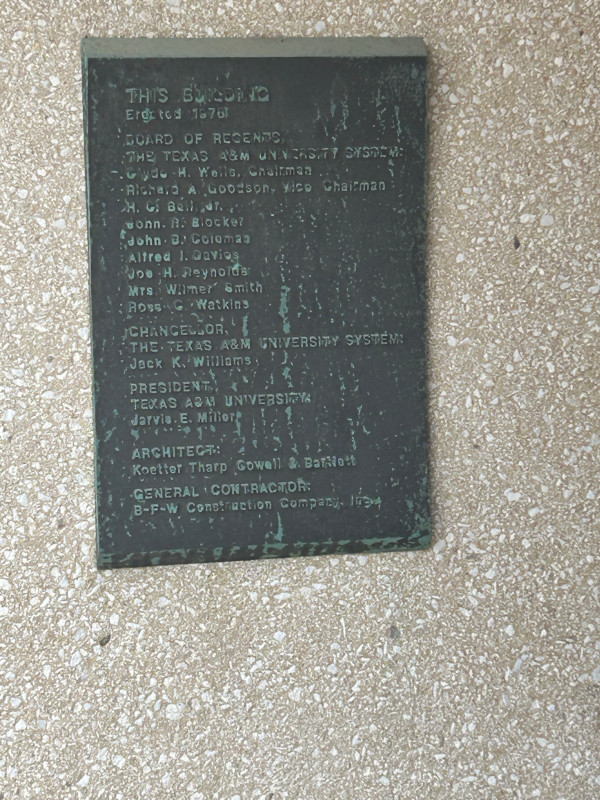
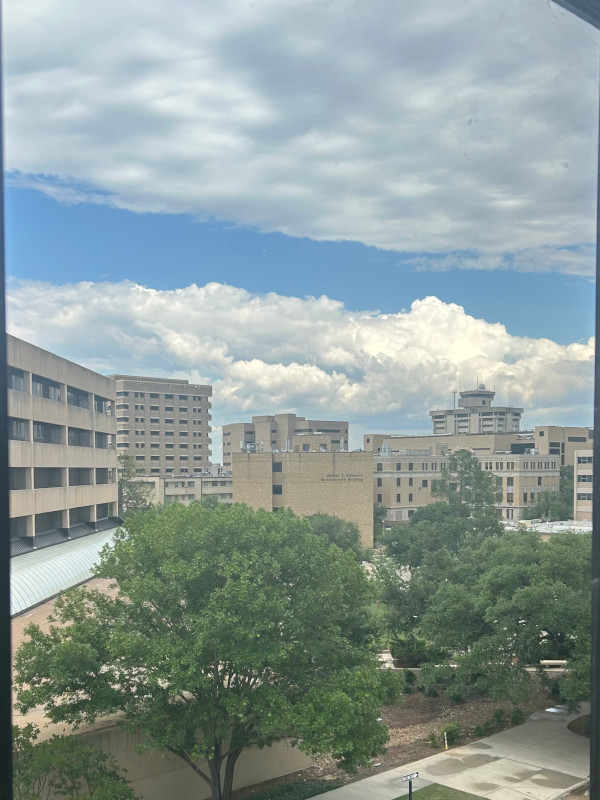
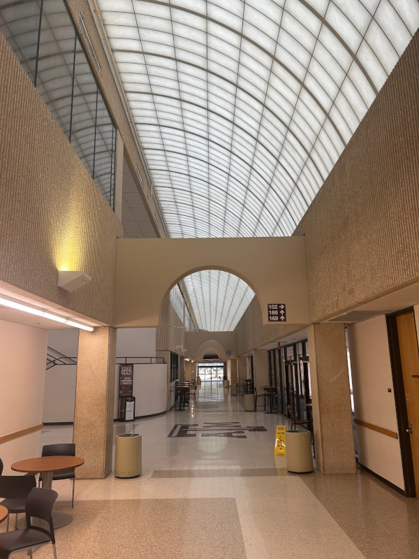

🏭Why Did My College Campus Look So... Depressing?
All-star Brutalist Skyline at Texas A&M
If you went to college in the US, chances are you’ve seen a few depressing buildings like these. Often called “Brutalist” architecture, maybe you also heard rumors that they were built by the Russians or designed to suppress student riots. I’ll take a crack at separating fact from fiction today, as I process what made this style so popular, and why public colleges (of all tenants) seemed to fall in love. And as a bonus, all of the pictures in this article are from my belovedly brutalist alma mater, Texas A&M!
Architectural article disclaimer: I have zero formal training in architecture - just a big fan! Please bear with any amateur mistakes here.
A Brief, Anecdotal History of Brutalist Architecture
Let’s get that burning question out of the way. Why was this style so popular? Did people really want their workplaces to be more depressing? To answer that question, we have to cross the Atlantic (and go back in time). After being relentlessly bombed in World War II, Britain needed to replace a lot of buildings very quickly. The question was: how? Previous architectural styles like Art Deco and Beaux-Arts ornamentalism (see the Academic Building, below) were expensive and (by this point) unpopular. Prewar apartments were also dingy and cramped - think West Side Story brownstones. An entirely new way of building large-scale, clean housing at a low cost was needed, and fast.
TAMU’s Beaux-arts / Classical Revival Academic Building (image credit)
British architects Alison and Peter Smithson saw this as an opportunity to try something new. They observed how low-income neighborhoods often formed tight communities - what if they could foster this style of community in massive, low-cost apartment projects? To counteract “apartment isolation”, The Smithsons promised to bring neighborhoods to renters' front doors. Inspired by fellow architect Le Corbusier’s “Streets in the Sky” concept, they gave their projects massive open-air hallways to act as common spaces. Children could play in the “street” and residents could pass the time on the shared balconies. Green spaces and fresh air were prioritized, in direct contrast to older, cramped apartment complexes. Because of these considerations, one architect is quoted “We didn’t think we were ‘Brutalists’. We thought we were quite nice guys”. For first few years, Brutalist projects were decently successful! Unfortunately as buildings started aging, cracks (literal and metaphorical) began to show.
TAMU has its own “Streets in the Sky” thing going, too!
First off, lofty concepts like “streets in the sky” didn’t pan out. In reality, these dimly-lit, easily accessible hallways attracted vandals and criminals. Plus, Brutalism’s namesake material (“beton brut”, meaning bare concrete) easily crumbled, causing structural problems that were cost-prohibitive to fix. There was an underlying cause to these functional failings: Brutalist residential projects were just too optimistic. New building techniques and public health breakthroughs were supposed to finally solve the housing crisis with “bigger and better” homes for the masses. But as time went on, it became obvious that there were problems endemic to public housing that mere architecture couldn’t fix. Thinking that technology was the only solution created a future that was less Star Trek and more Blade Runner.1 Now, the buildings of Brutalism remain as a testament to this well-intentioned but ultimately doomed planning philosophy.
Even outdoor plazas aren’t safe from brick and slab concrete!
The Chemistry building mixes it up with wood accents on the top floor. Weird!
Brutalist Architecture on the College Campus
Nowhere did the tenets of Brutalism apply more than to student housing. Most students are flexible to minimalist accommodations (read: poor), and are naturally inclined to be social in community spaces. And as universities soon learned, the style of monolithic, slab concrete worked just as well for offices and lecture halls as it did for dorms. Low construction costs and heavy government investment in academic research (especially aerospace and defense) ensured that cold war colleges built brutalist.
My alma mater is no exception, and enrollment history tells the story. In 1965, A&M still had under 10k students on campus - by 1985, that number had more than tripled to 35k! Of course, these students needed new lecture halls, dorm rooms, and dining halls. And as far as I can tell, every new construction from this period had some sort of Brutalist bent. But it’s probably easier to show than tell - let’s finish off the article with a short “Brutalist Tour of Texas A&M”!
TAMU’s most depressing building: Blocker
|  |  |  |
|---|---|---|
| Blocker building, erected in 1976 | View of the surrounding area | Blocker’s take on “Streets in the Sky” |
If you can believe it, this is the architecture department building!
For what it’s worth, I love the Langford building’s interior.
That’s a wrap for this article - thanks for sticking around! Next time you visit your home university, you’ll know a bit more about why these quirky buildings got built!2
City hall, or evil lair?
-
I couldn’t find a way to shoehorn this detail into the article, but it’s too cool to leave out. When Dallas' Brutalist Dallas City Hall was built (above), it was the pride of the city. Architect I.M. Pei is quoted: “When you do a city hall, it has to convey an image of the people, and this had to represent the people of Dallas … The people I met - rich and poor, powerful and not so powerful - were all very proud of their city. They felt that Dallas was the greatest city there was, and I could not disappoint them." But a few years later, Dallas City Hall was cast as sinister corporation “Omni Consumer Products'” headquarters in 1982’s Robocop. Movies like these and aforementioned Blade Runner definitely helped solidify Brutalism’s image as the architecture of monopolistic mega-corporations. ↩︎
-
Further reading - it seems like Seoul is having a bit of a Neo-Brutalist revival. If I ever make my way out there, I may have to write a part 2 for this article! ↩︎